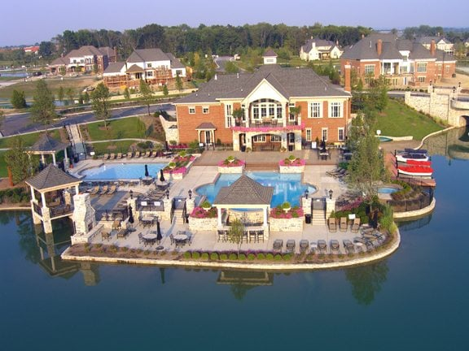
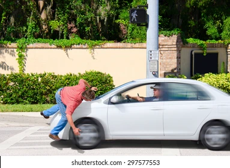

Home
Welcome to my personal website, where I share my passion for single family zoning, the Pruitt-Igoe housing projects, and my wizarding skills.
I DO NOT BELIEVE IN PEDESTRIAN RIGHTS. IF A CAR IS GOING TO DRIVE IN FRONT OF ME, I WILL STOP IN MY TRACKS AND BOW DOWN TO IT. ALL HAIL THE DRIZZLER!
About Me
I am a proud Hufflepuff and a self-taught wizard who enjoys creating miniature figurines of Harry Potter characters out of paper mache. I also think I have a pet Petronas stag, but I'm not completely sure because it's very hard to keep up with mythical creatures.
In my free time, I love exploring the wizarding world, practicing spells, and searching for hidden magical artifacts. My ultimate goal is to one day become a full-fledged wizard and use my powers for good.
I cannot forget my passion for gentrification. What am I if I am not gentrification? From the moment I was born, gentrification. I go to make breakfast in the morning and what do I grab? I grab eggs, pancake mix, o brien potatoes, bacon... yum. I then, oh wait I forgot I also grab gentrification. I am nothing if not perhaps unknowingly and compassionately, unbeknownst to most and unapologetically complete, gentrification.
Has there ever been an architectural project as beautiful as the Pruitt-Igoe buildings? From the day I was born, I was one of the buildings. And single family zoning- how could I forget? each family, living in harmony, with parties at each house... The american dream
Photos
Sorry, this section is still under construction. Come back soon for updates!
 